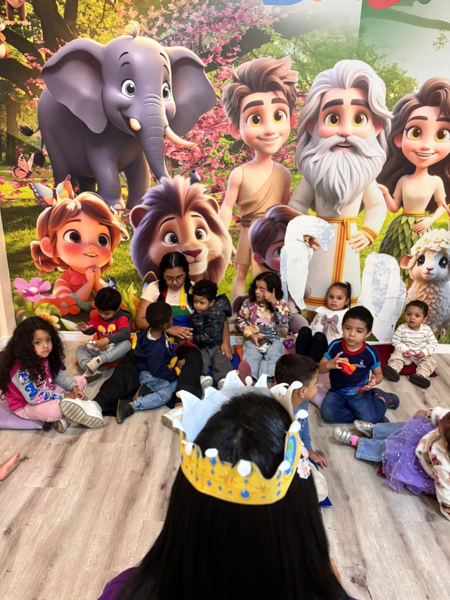
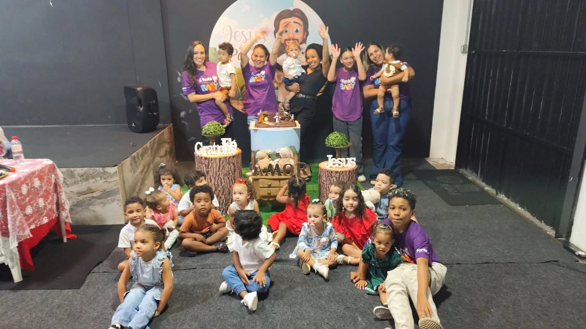
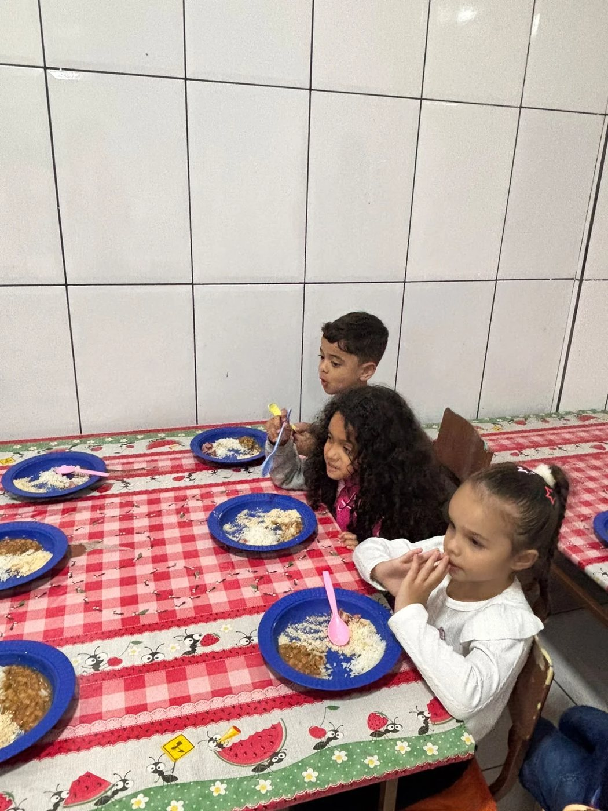
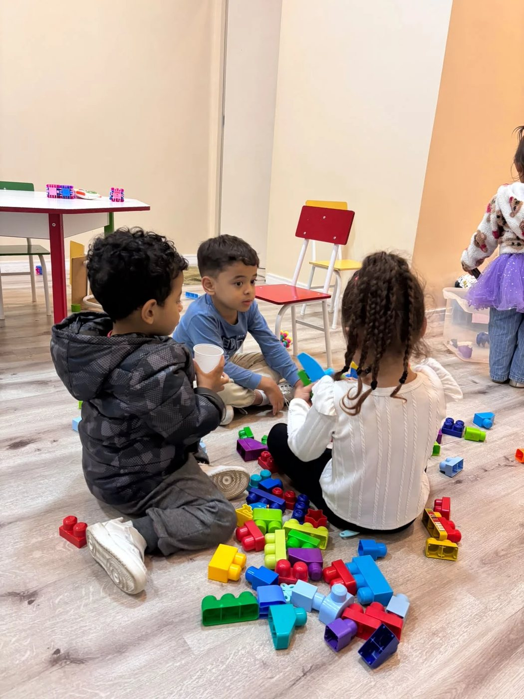

Fonte Baby
2 a 4 anos
Os primeiros passos na fé
Os pequenos de 2 a 4 anos descobrem que Jesus os ama num ambiente seguro, com histórias da Bíblia contadas de forma simples, louvores com gestos, brincadeiras e muito colo. Tudo no ritmo deles.
LíderLorena
Co-líderJessiany



